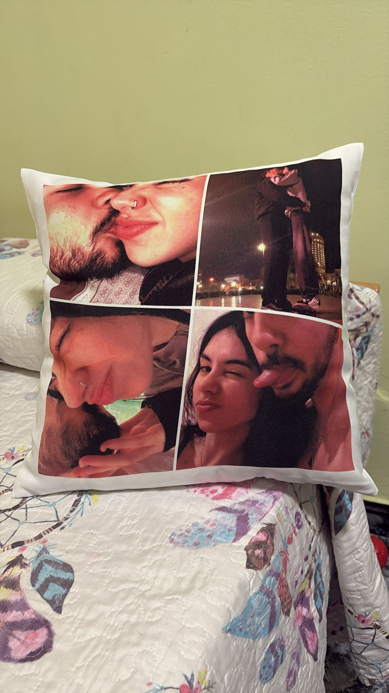

Carta de los 3 Meses.
Mi princesa, sabes que eres lo que más quiero, no sabía que dedicarte la verdad porque eres de las mejores cosas de mi vida y quiero que tengas algo especial mio, pero no sabia que hasta que se me ocurrio esto
Que mejor idea que regalarte una página web dedicada unicamente a los 2, algo que creo que nunca nadie más te va ha poder dedicar y algo bonito que puede se nos puede quedar en el recuerdo
Algo que podemos actualizar cada fecha importarte.
Nueva actualización, fecha destacada, 14 de Febrero, día de los enamorados.
Nuestros meses de relación
- 27/10/2025 Nuestro primer beso y el empezar.
- 27/11/2025 Nuestro primer mes no oficial.
- 27/12/2025 Nuestra confirmación en el parque Sur(Un dia genial).
- 27/01/2026 Nuestro primer mes de relación(Recreando el primer día).
- 14/02/2026 Un día maravilloso en la playa de Amadores (Aunque el novio fastidio el final del dia 😢)
- ../../20.. Los días/meses/años que nos quedan de experiencias(Te quiero mucho).
Galería
Y esta es mi preciosa carta de San Valentín
Esta carta es para recordarte que no solo eres mi novia, que eres la persona que quiero ver todos los dias, con la cual sueño toda las noches y en un futuro mi esposa.
Gracias por cada detalle, cada mensaje bonito (aunque aveces eres un poco borde(es broma (te quiero))), cada momento que me haces reir y cada expresion bonita que tienes conmigo, gracias por escucharme y por comprenderme (no siempre(es broma(no me quite las custodia de mis hijos))).
No tengo regalos, flores, cosas para agradecerte todo lo que haces por mi aunque creas que es poco es lo más bonito que alguien haya hecho por mi.
Y ahora me toca recibir un poco a mi, aunque este es el primer San Valentin que disfruto acompañado por una magnifica persona como tú, por mi culpa lo termine fastidiando, te pido perdon y te prometo que te lo compensare, quiero que sepas que eres lo más especial de mi vida y quiero que te pase todo lo mejor del mundo.
Por último y no menos importante te quiero decir 2 cosas:
1. Te quiero mucho, y quieros que sepas que siempre te querre
2. Espero tenerte para el resto de mi vida y que nada ni nadie nos separe, siempre tendras un hueco en mi corazon porque te lo has ganado.
Te quiero mucho amor, eres lo más bonito que he visto, feliz San Valentin ❤️.
El regalo que me hiciste ❤️:
El regalo que te hice ❤️:
NO HAY FOTO PORQUE NO LE SACASTE....................

12 razones por las que te amo
- Porque siempre estas cuando te necesito.
- Porque me escuchas cuando estoy mal.
- Porque te preocupas por mi.
- Porque contigo el tiempo se me va volando.
- Porque gracias a ti encontre la felicidad.
- Porque contigo todo es más facil.
- Porque sabes perdonarme.
- Porque sabes tratarme bien y cuidarme.
- Porque sabes darme cariño a mi y a mi barra de pan.
- Por apoyarme en los momentos que estoy mal y darme todo el cariño del mundo.
- Porque vas a ser la futura madre de mis hijos.
- Por todo eso y por mucho más te quiero y siempre te querre.
Mini juego del amor
Estoy pensando en un número del 1 al 10. Si aciertas, ganas un beso extra.
Y no te robo más tiempo amor, pero una cosa más.
Gracias por existir y por compartir tu tiempo conmigo.